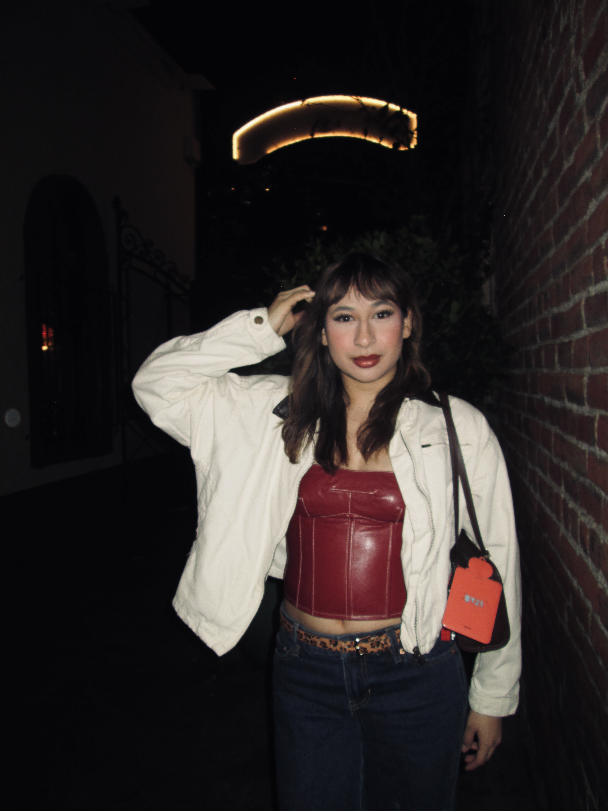

About Me

I am a Mexican American Artist from Stockton, California most of my inspiration comes from my family and upbringing. As a child my mother has always encouraged us to express ourselves creatively and my father has always surrounded us with music. This has made art a natural part of my life. Whether through sound, visuals, or storytelling, I’ve learned to see art as something that connects people and reflects everyday experiences.
When I create art I always think about what I am listening to, the people who are around me and the social issues that are surrounding me. Topics and themes around Migration and Chicano culture are a common theme in my art pieces since my parents migrated from Mexico.
During the pandemic I had an increase of curiosity about video editing but didn’t necessarily have great access to tools to create fun videos. It wasn’t till I came across cap cut and found myself creating silly videos for myself and my family. Most of these videos were just compilations of our parties and having a good time together.
I found myself in my senior year of high school constantly creating little videos and photoshop remixes that I decided I wanted to get into Digital Media Art. During my time at San Jose State I learned how to code and my interest in using code to create visuals has skyrocketed. I hope to use my skills in VFX and Coding to combine them to create interactive public artworks.
My goals in the future is to get into the San Jose State BFA program for Digital Media Art to continue creating art alongside my fellow classmates. I want to challenge myself creatively, experiment with new tools, and refine my artistic voice.
As for my future career I hope to become a creative director for a tech company like Apple, Twitch, or a video game company like Roblox or Epic Games. My interest in working in video games comes from my passion of playing games like Fortnite with my friends has always brought me joy. As for Roblox it was a platform where my friends and I were able to stay connected with friends and family during the summer time.
Ultimately, my long-term goal is to combine my background, culture, and technical skills to create meaningful and accessible art. I am especially interested in developing interactive public artworks that engage diverse communities and reflect shared experiences. By blending VFX, coding, and storytelling, I hope to create work that not only entertains but also inspires and connects people across different backgrounds.
In addition to this, I hope to work on projects that push creative boundaries and explore new forms of digital storytelling. I am interested in collaborating with other artists, developers, and designers to create experiences that are both visually engaging and meaningful. I also want to continue learning new technologies and software so I can stay adaptable in and ahead of the digital landscape. Through my work, I aim to represent my community and create spaces where people feel seen and connected.